Главный фонтан и один из основных символов ВДНХ. Шестнадцать женских статуй фонтана символизируют 16 Союзных республик.
Фонтан "Каменный цветок"
Изначальная идея показать дары природы каждой из республик не была реализована в полной мере — сделали лишь три композиции и после их «скопировали» на остальные постаменты.
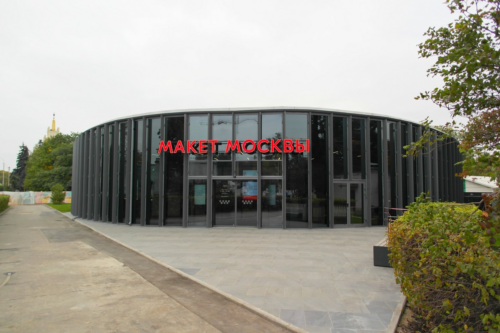
Макет Москвы
Главная отличительная особенность макета столицы — поразительная детализация зданий и максимально точное воссоздание элементов ландшафтной архитектуры. Иногда проводятся мероприятия, подробности:https://vdnh.ru/places/maket-moskvy
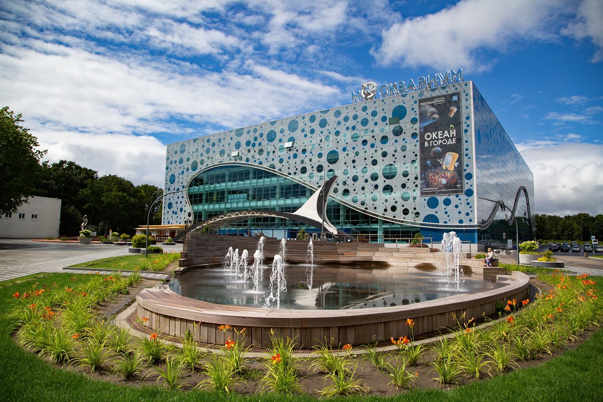
Москвариум
Центр океанографии и морской биологии, один из крупнейших океанариумов Европы, находится на территории ВДНХ. Иногда проводятся мероприятия, подробности: https://vdnh.ru/places/tsentr-okeanografii-i-morskoy-biologii-moskvarium/
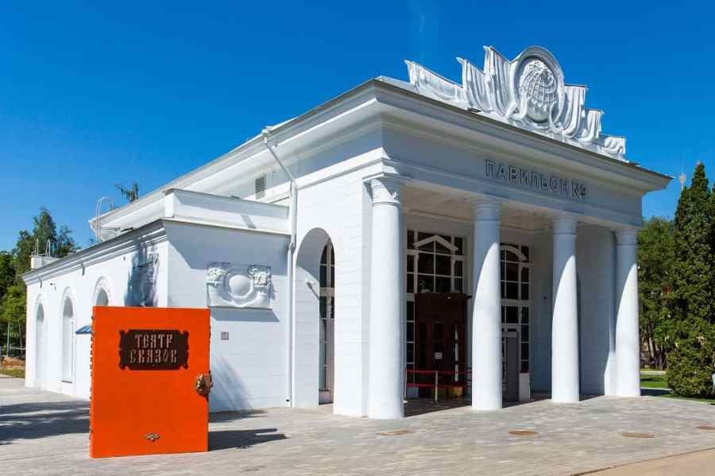
Театр Сказок
Детский интерактивный Театр сказок — это уникальное мультимедийное пространство, где каждый зритель может взаимодействовать с персонажем и влиять на сюжет сказки. Шоу рассчитано на детей от трех до десяти лет, но вызовет интерес и у взрослых. Точное расписание сеансов, уточняйте: https://vdnh.ru/places/teatr-skazok-pavilon-9-yunye-tekhniki-torf/
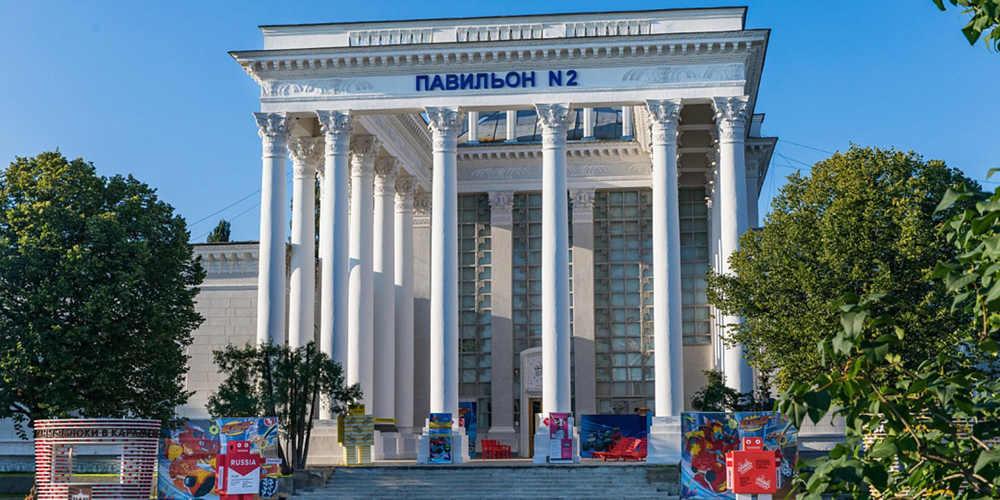
Робостанция
Самая масштабная интерактивная выставка достижений робототехники в России — «Робостанция» — стирает грань между технологичным настоящим и фантастическим будущим.
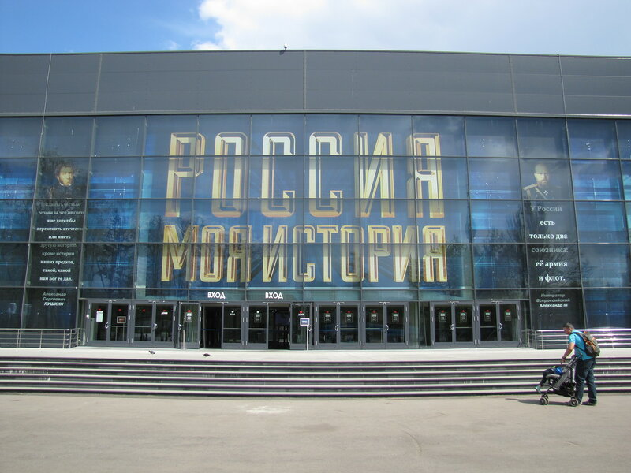
Россия — моя история
Мультимедийный образовательно-выставочный комплекс, который рассказывает о важных периодах формирования и становления государства и культуры нашей страны.
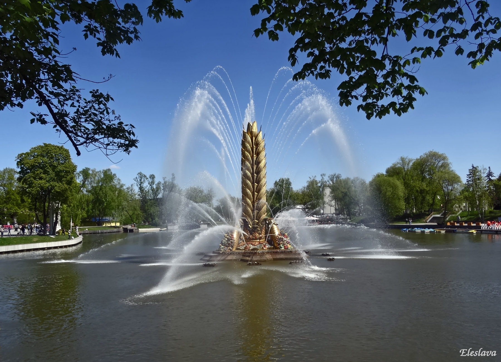
Фонтан "Золотой колос"
Символика фонтана очевидна, потому что с древних времен колосья означали возрождение, жизнь, урожай и плодородие.
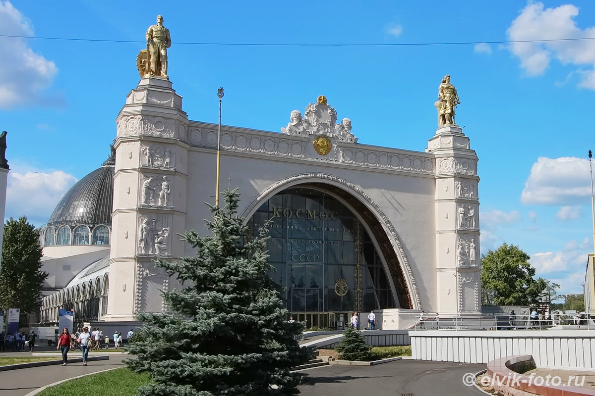
Павильон № 34 Космос
Масштабная экспозиция посвящена истории достижений отечественной космической отрасли. Выставочное пространство состоит из трех разделов. «КБ-1. Космический бульвар», «КБ-2. Конструкторское бюро»,«КБ-3. Космодром будущего»
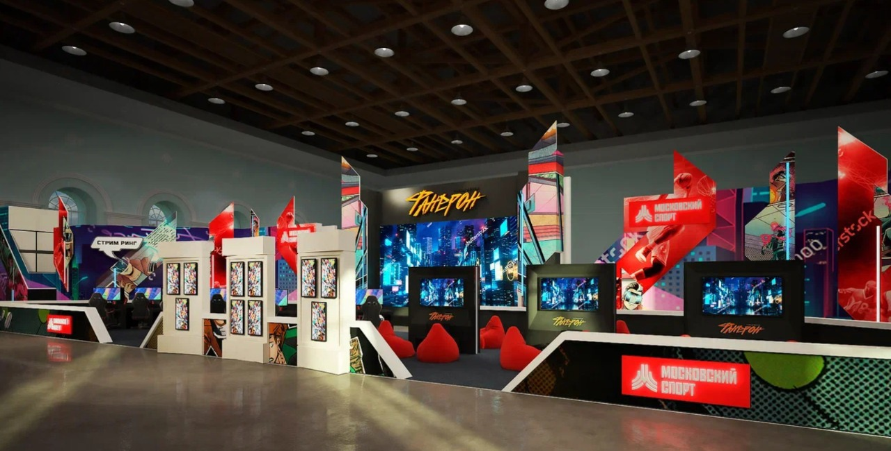
Фанерон. Город мечты
Она разделена на два пространства — постоянную экспозицию с футуристическими инсталляциями и лабораторию, в которой проходят воркшопы, мастер-классы, лекции и встречи с экспертами индустрии комиксов.
Павильон № 58
Центр славянской письменности Слово.Здесь можно узнать, как развивается письменность в России и мире, какую роль она играет в жизни разных народов и как на протяжении многих веков соприкасается с устной речью. Проводятся мероприятия, подробности: https://vdnh.ru/places/tsentr-slavyanskoy-pismennosti-slovo/
Музей Олимпийского движения
Павильон построен в 1954 году. Основными темами в оформлении главного фасада и интерьеров стали героика разгрома немецко-фашистских войск в годы Великой Отечественной войны и возрождение сельского хозяйства.
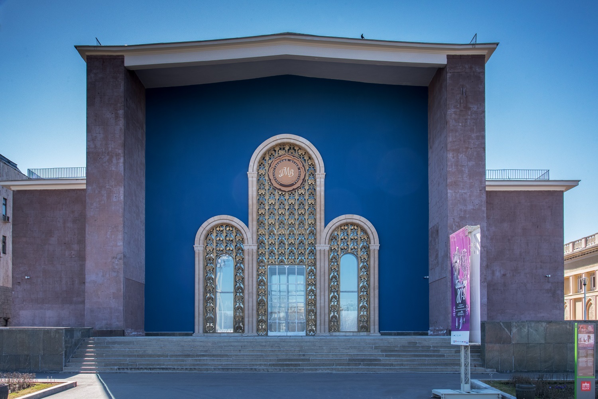
Музей Рерихов
Основная мысль, объединяющая выставочное пространство, и само название «Ковчег будущего» связаны с концепцией сбережения культуры — главного завета, который семья Рерихов оставила человечеству.
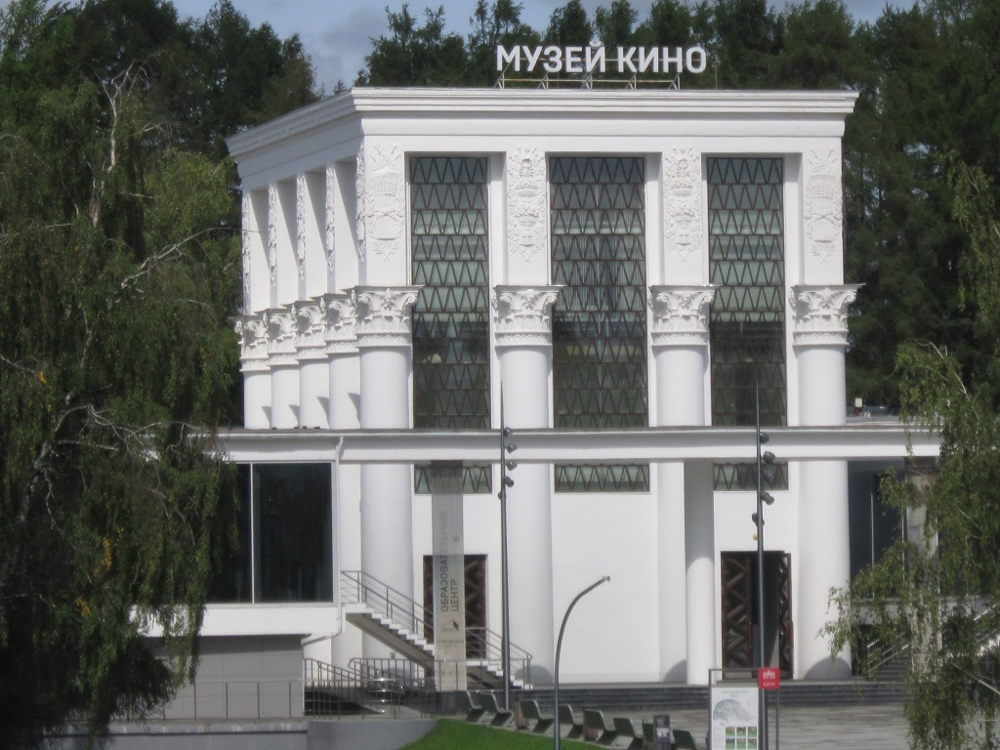
Павильон №36. Музей кино
В пространстве Музея кино на ВДНХ оборудованы три кинозала, зоны для постоянной экспозиции и тематических выставок, а также аудитории для проведения лекций по истории и теории киноискусства.
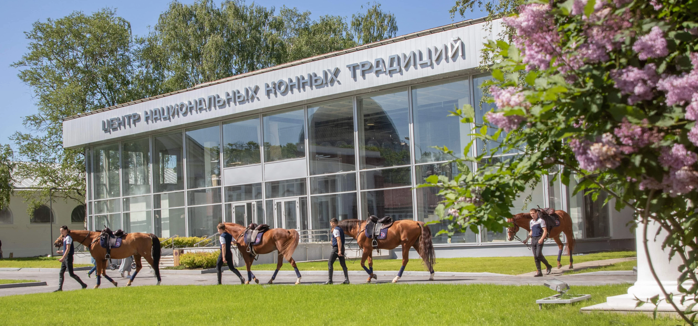
Центр конных традиций
Центр национальных конных традиций – это уникальная площадка мирового уровня для демонстрации конного достояния России, где гармонично сочетается спорт, культура, образование, коневодство и туризм.
Павильон № 5
Музей городского хозяйства Москвы.Интерактивная экспозиция в простой и увлекательной форме рассказывает, как создается и поддерживается комфортная среда для проживания в мегаполисе.
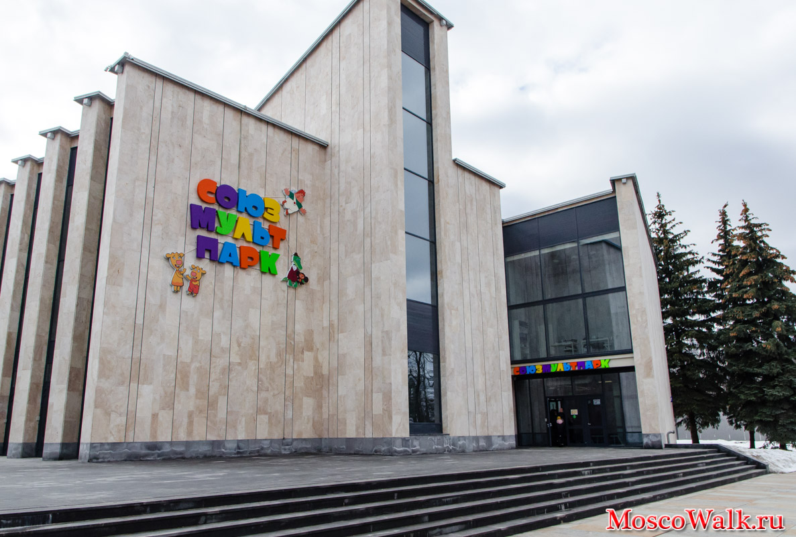
Союзмультпарк
Единственный в России мультимедийный центр «Союзмультпарк» — уникальная площадка для детей и взрослых, где каждый сможет погрузиться в мир любимых мультипликационных героев, оживить их, получить новые навыки и раскрыть свои таланты.
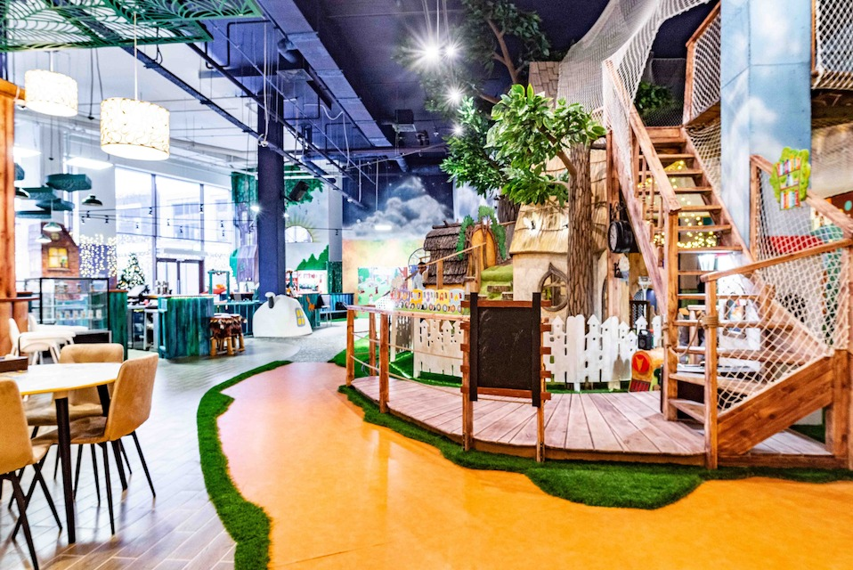
Московский ЛисаПарк
Интерактивное театральное пространство, где гости становятся участниками сказочного путешествия вместе с героями сказок – профессиональными актерами Московских театров.
Музей ВДНХ
В Музее ВДНХ вы узнаете, кто и зачем создавал Выставку, кем были ее посетители, какие идеи были заложены на разных этапах ее развития. В этом вам помогут интерактивные инсталляции, макеты, архивная кинохроника и подлинные предметы материальной культуры.
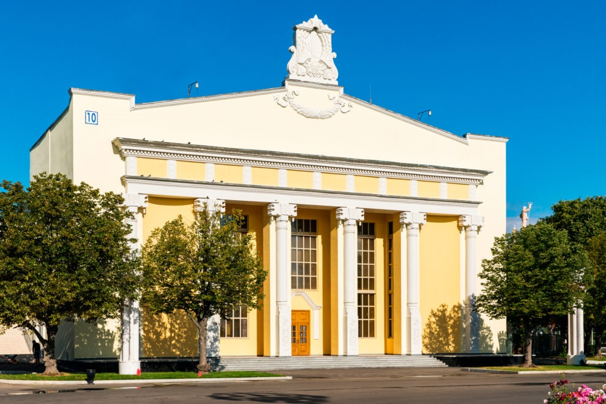
Павильон №10.Республикa Молдова
В павильоне открыт магазин товаров для здоровья, одежды, а также ресторан европейской и национальной кухни «Leon».
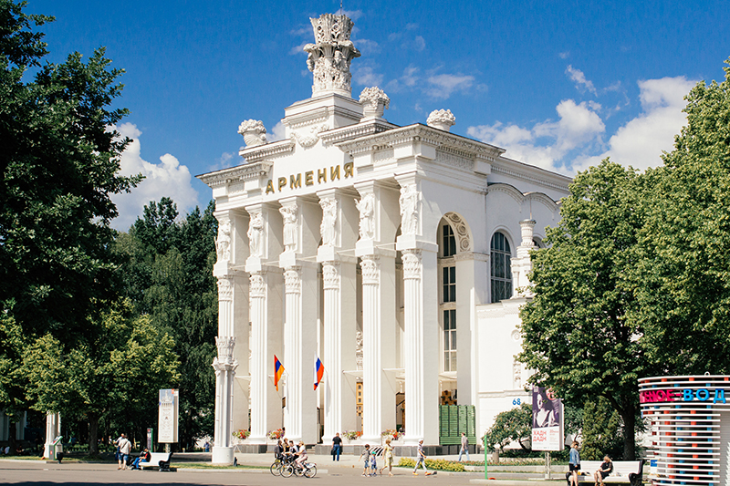
Павильон №68.Республика Армения
В павильоне работает ресторан «Арарат», дегустационный зал, а также магазин армянских продуктов.
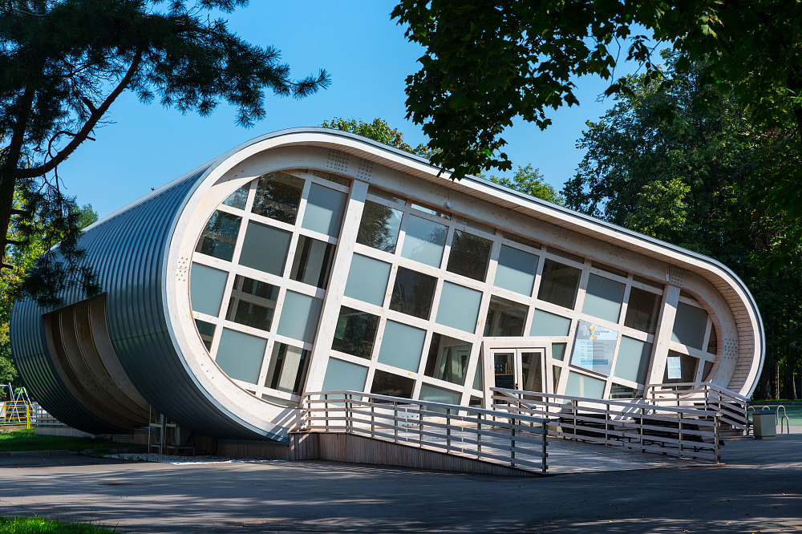
Шахматный клуб
В распоряжении гостей ВДНХ всесезонное деревянное строение площадью 400 кв. м. В универсальной игровой комнате установлено 12 деревянных столов с удобными скамейками.
Дом культуры
Дом культуры — место проведения концертов, спектаклей, мастер-классов.Проводятся мероприятия, подробнее:https://vdnh.ru/places/dom-kultury-vdnkh-stroenie-84/
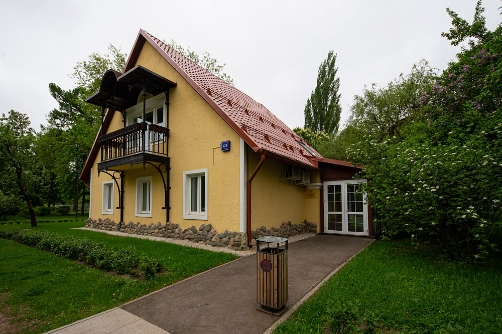
Студия настольных игр Dodoland
Додо-дом — магазин добрых и экологичных настольных игр, конструкторов, игрушек и книг. Во все игры можно поиграть совершенно бесплатно и только потом принять решение о покупке.
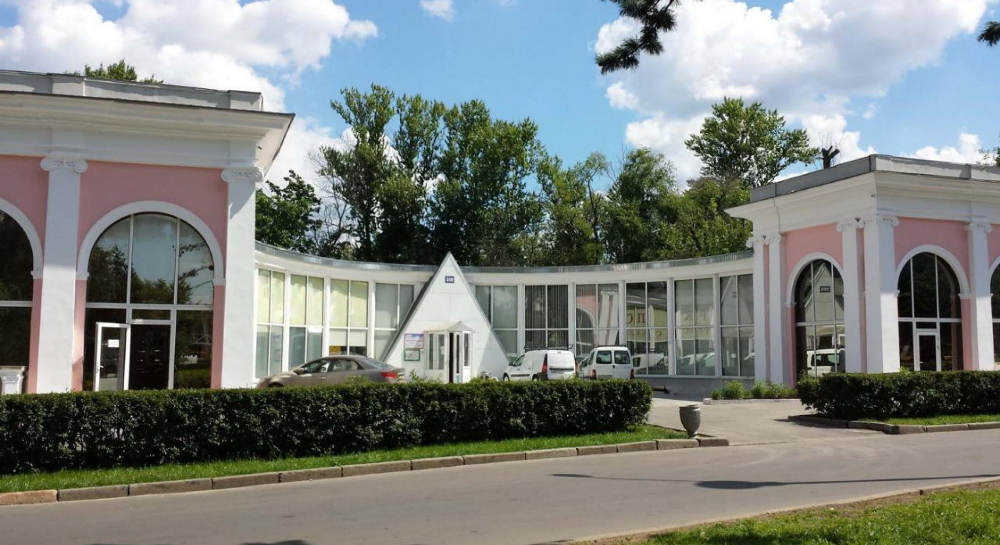
Дом бабочек
В строении 519 работает «Баттерфляриум» — выставка живых тропических бабочек и музей коллекций насекомых со всего мира.
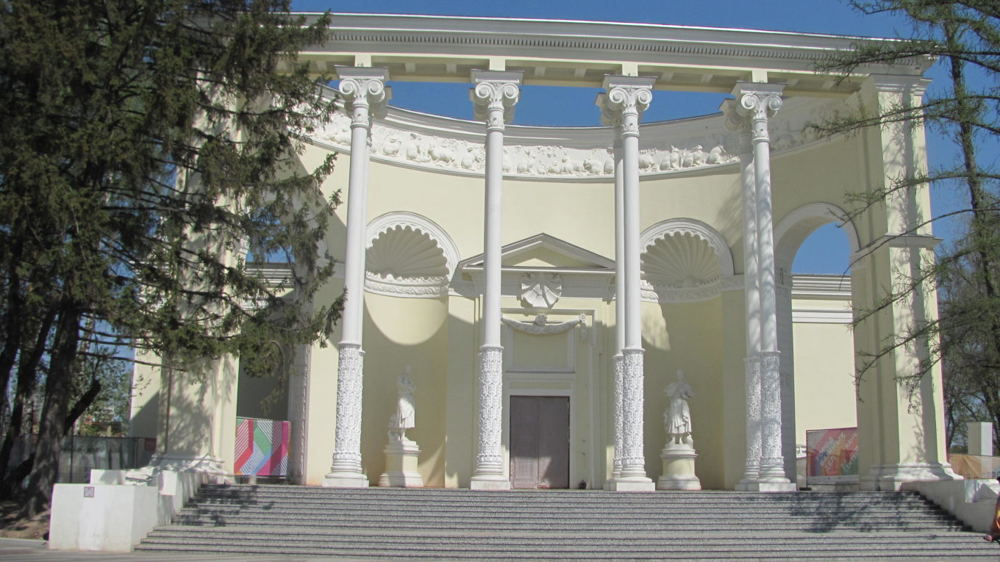
Павильон №44
Неподалеку от здания, на открытом участке, можно было увидеть и самих кроликов разных пород: шиншилла, венский голубой, белый великан, ангорский, пуховый, белка, бабочка. При павильоне работали кролиководческая ферма и кормокухня.
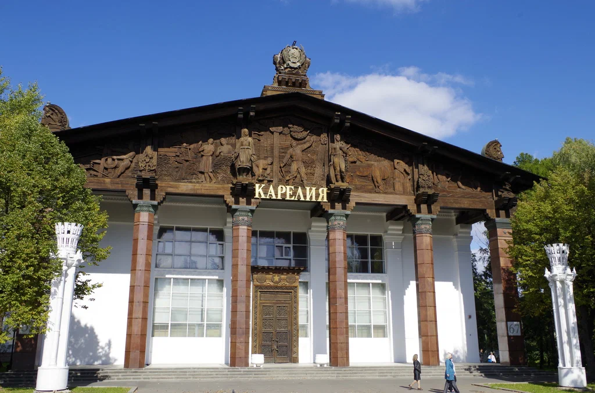
Павильон №67.Карелия
Павильон построен в 1954 году, архитекторы — Ф.И. Рехмуков, А.Я. Резниченко.
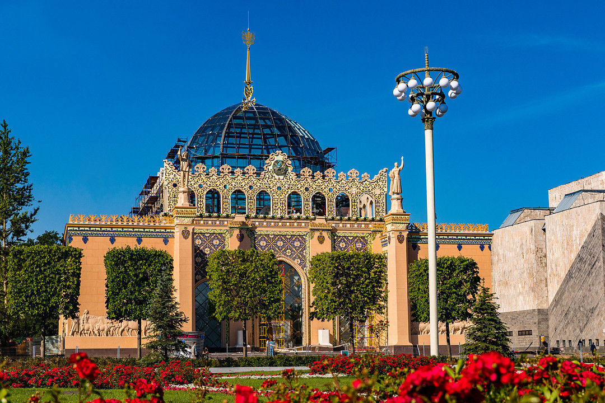
Павильон №11.Республика Казахстан
Гости павильона могут увидеть уникальные экспонаты казахской культуры, мультимедийные экспозиции о становлении государственности Республики Казахстан
Павильон №12
Массивное здание облицовано светлым и темным мрамором. Сейчас здесь располагается Выставочный центр профсоюзов.
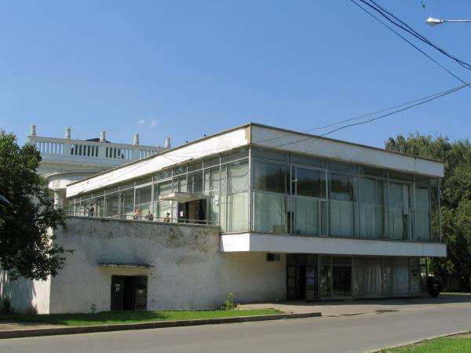
Строение 457
iTAB — территория здоровья — это постоянная выставка нутрицевтиков и натуральных экологичных товаров для здоровья, молодости и красоты.
Павильон №14.Республика Азербайджан
В павильоне находится торгово-выставочный центр страны. Деятельность центра направлена на культурное и деловое представительство Азербайджана в России.Проводятся мероприятия, подробнее: https://vdnh.ru/places/pavilon-14-vychislitelnaya-tekhnika-i-informatika-byvshiy-azerbaydzhanskaya-ssr-/
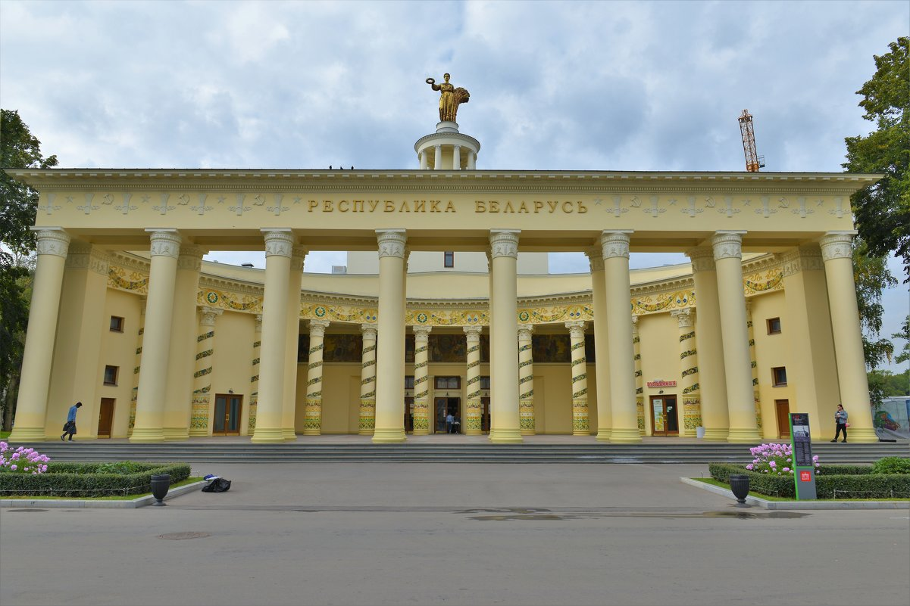
Павильон №18.Республика Беларусь
В павильоне располагается торгово-выставочный центр Республики Беларусь, в котором представлены товары белорусских производителей. Проводятся мероприятия, подробнее: https://vdnh.ru/places/pavilon-18-respublika-belarus/
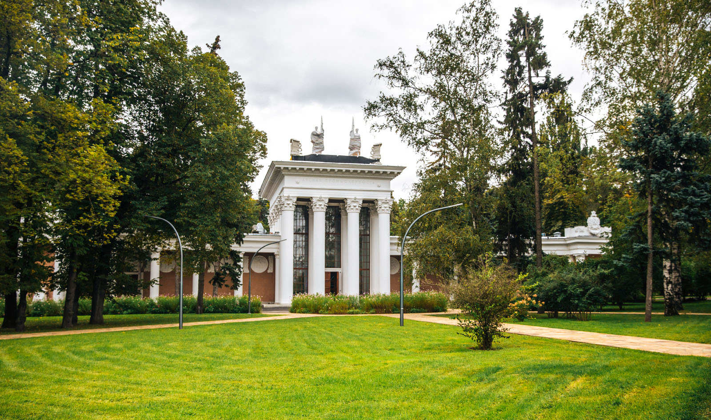
Павильон №17. Галерея «Лес»
В ходе небольшого интерактивного путешествия гости смогут узнать, что общего между человеком и деревом, как общаются деревья, поиграть в театр теней и лесную викторину, помочь олененку попасть к маме или вызвать Лешего.
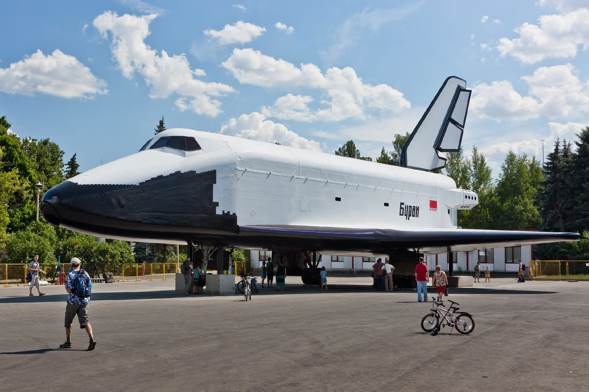
Комплекс «Буран»
Внутри макета орбитального корабля «Буран БТС-001» расположен интерактивный музей — здесь можно не только посмотреть фильм о легендарном ракетоплане, но и управлять его посадкой на космодроме Байконур в режиме реального времени.
Самолёт Як-42
Борт СССР-42304 знаменит тем, что именно на нем установлен рекорд дальности беспосадочного перелета — 4730 километров, от Раменского до Читы.
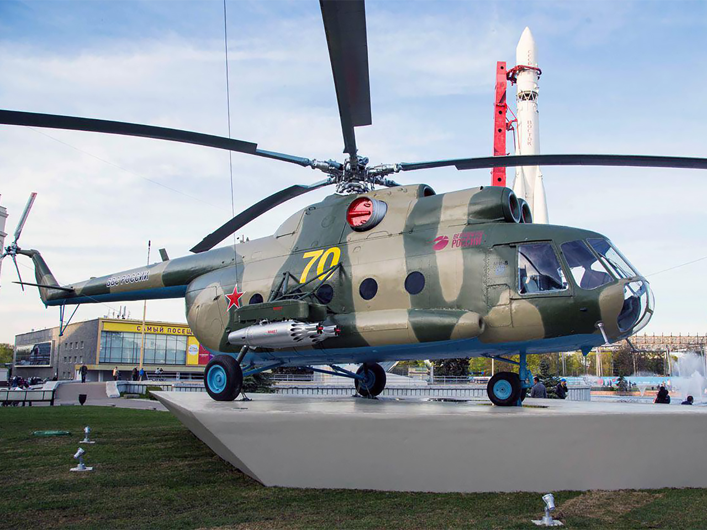
Вертолёт Ми-8
Вертолет Ми-8Т был способен перевозить до 24 человек и предназначался для высадки и эвакуации десанта, огневой поддержки сухопутных войск, а также транспортировки грузов
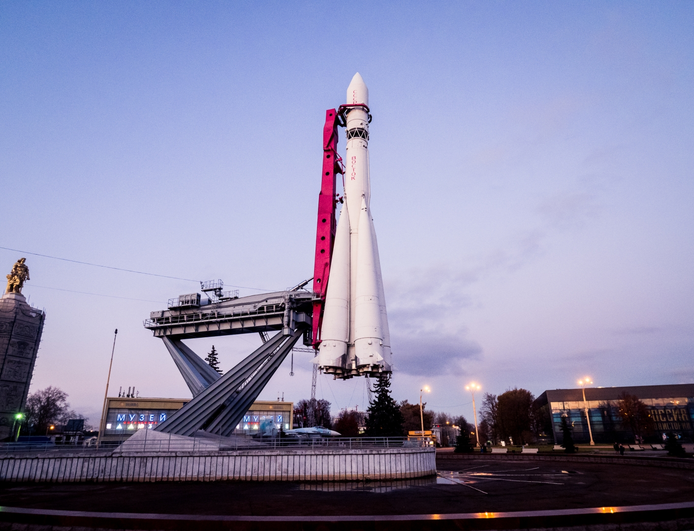
Ракеты-носителя «Восток»
Ракета-носитель «Восток» занимает особое место в истории отечественной космической программы, ведь именно этот аппарат 12 апреля 1961 года вывел на околоземную орбиту «Восток-1», на котором Юрий Гагарин совершил первый в истории Земли пилотируемый полет в космическое пространство.
Павильон №26
Музей Транспорта Москвы-экспозиция представляла коллекцию серийных автомобилей, прототипов «Москвичей» и гоночных болидов в кинематографическом жанре «байопик».
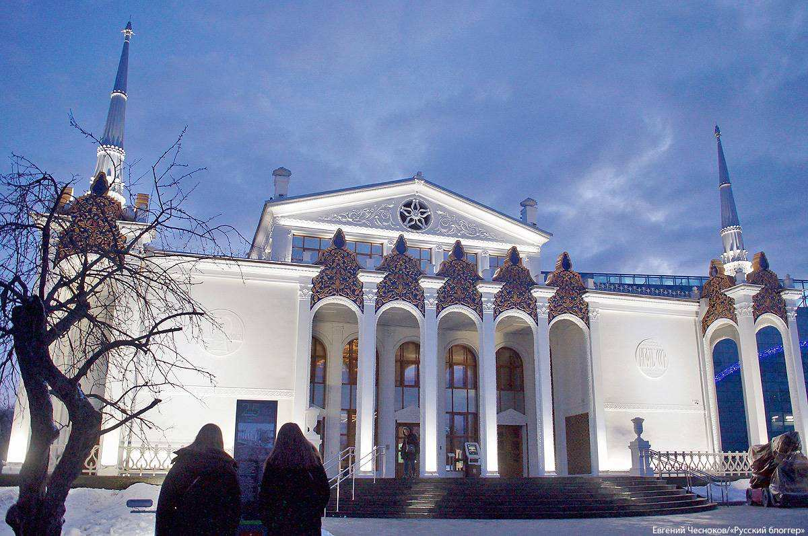
Павильон №25 «Нефть»
Самая большая мультимедийная экспозиция о нефти в России тематически делится на 4 зала: «Человек и нефть», «История», «Технологии», «Наука».
Павильон 21
По замечанию историка архитектуры А. Ю. Броновицкой, изогнутый козырек, нависающий над стеклянной стеной, — самый выразительный элемент главного фасада здания. Внимательные наблюдатели узнают в конструктиве принципы работы, которые популяризовал выдающийся французский зодчий ХХ века — Ле Корбюзье.
Зелёный театр
Легендарная площадка, место притяжения меломанов и театралов. Здесь — на сцене под открытым небом представлен разнообразный репертуар.
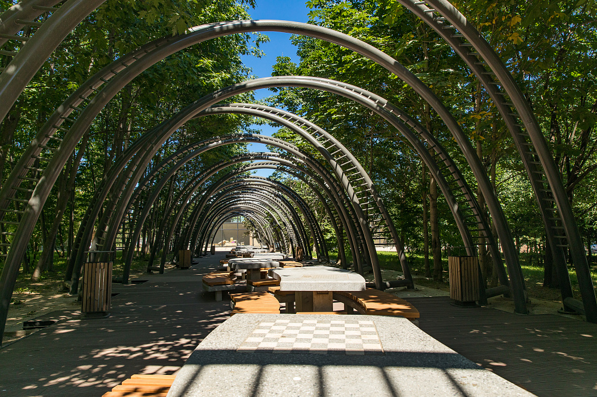
Зал игp
Аллея залов находится в зоне Ландшафтного парка «Природа наук и искусств» — самой рукотворной части парка, где природа соединяется с современными архитектурными технологиями и создает уникальное рекреационное пространство.
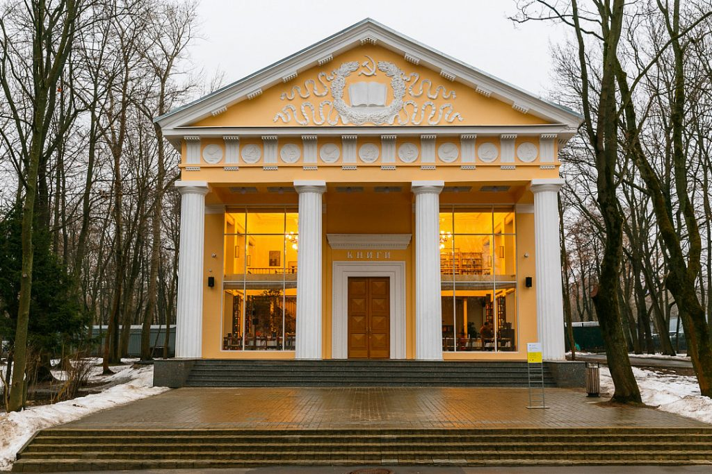
Павильон «Книги»
Книжный клуб, открытый для каждого. Здесь можно отдохнуть за чтением, принять участие в дискуссиях и образовательных проектах, поделиться идеями за чашкой кофе в кафе «РОСИЗО»
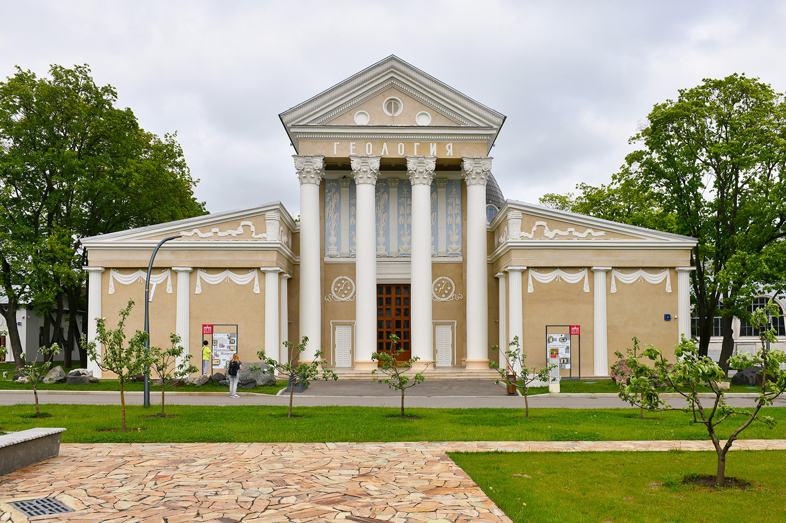
Павильон №31 «Геология»
Экспозиция выстроена как захватывающее повествование от лица ученых-биологов и современных художников о том, как все существующее на планете Земля, и даже за ее пределами, взаимосвязано друг с другом.
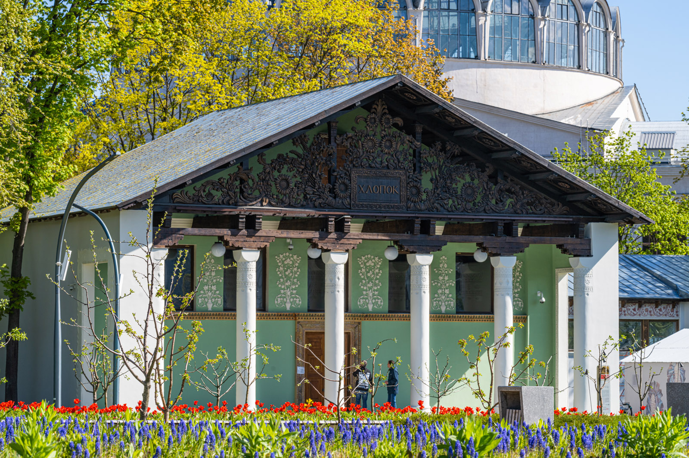
Музей «Биотех»
Посетители смогут взаимодействовать с экспонатами, участвовать в интерактивных викторинах и игровых объектах, однако даже такие развлечения будут насыщены полезной информацией, тщательно выверенной учеными.
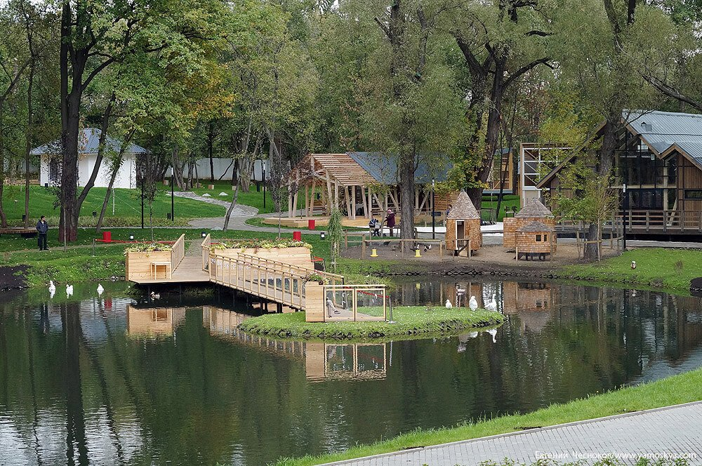
Городская ферма
Не покидая пределов Москвы, здесь в любую погоду можно скрыться от городской суеты и познакомиться с фермерской жизнью, традициями и симпатичными, ухоженными обитателями, наполнить день радостью творчества на семейном мастер-классе или оценить обеденное меню в кафе «Ферма».
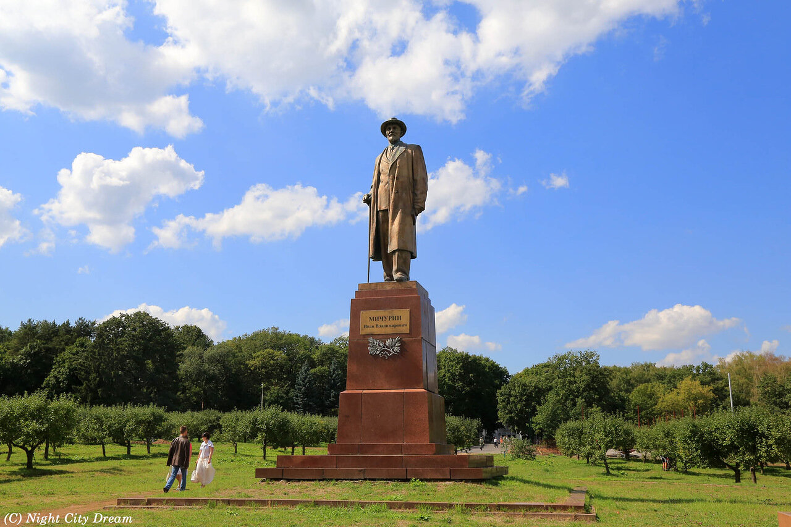
Памятник И.В. Мичурину
Русскому биологу и селекционеру, создателю многих сортов плодово-ягодных культур — находится сразу за Политехническим музеем. Его скульптор — Дмитрий Жилов.
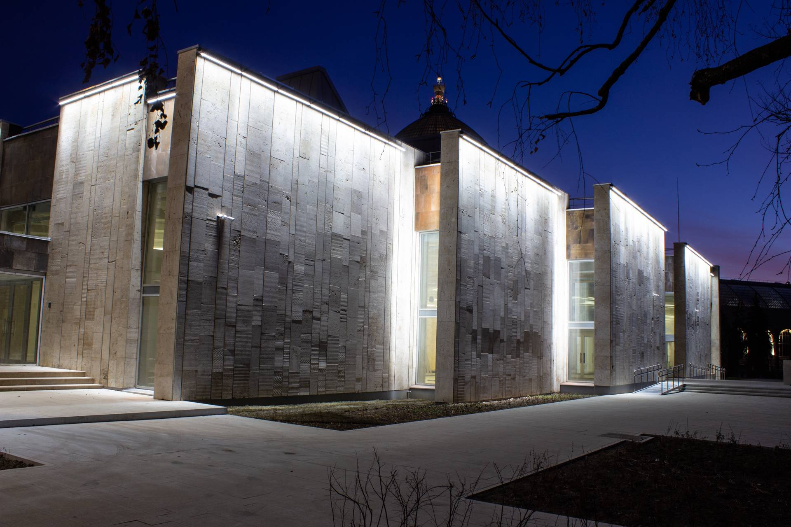
Павильон №29
"Цветоводство".Интерактивное экспозиционно-выставочное пространство, где посетители могут познакомиться с объектами флоры и фауны вживую и посредством современных цифровых технологий.
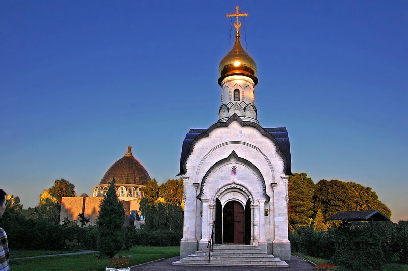
Храм-часовня
Храм-часовня святого Василия Великого.Святой Василий Великий, имя которого носит храм-часовня, жил в IV веке н.э., а своё имя — «Великий» — стал носить еще при жизни, так как был «ученым в двенадцати науках»
Sky Town
Sky Town включает в себя различные виды препятствий, множество развлекательных элементов, смотровую площадку и детский паркур.
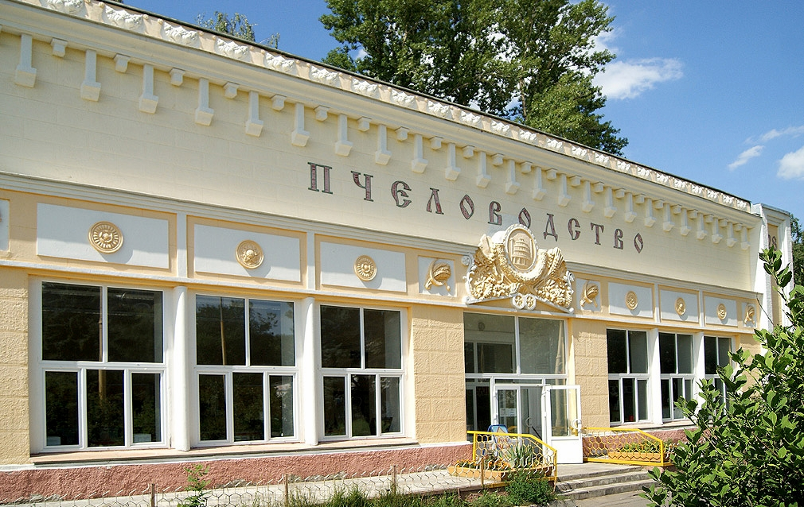
Павильон №28
«Пчеловодство».В выставочном павильоне при помощи интерактивных экранов и тщательно отобранных экспонатов, перед вами развернется история пчеловодства: вы сможете познакомиться с орудиями труда пчеловода, различными видами ульев, породами пчел.
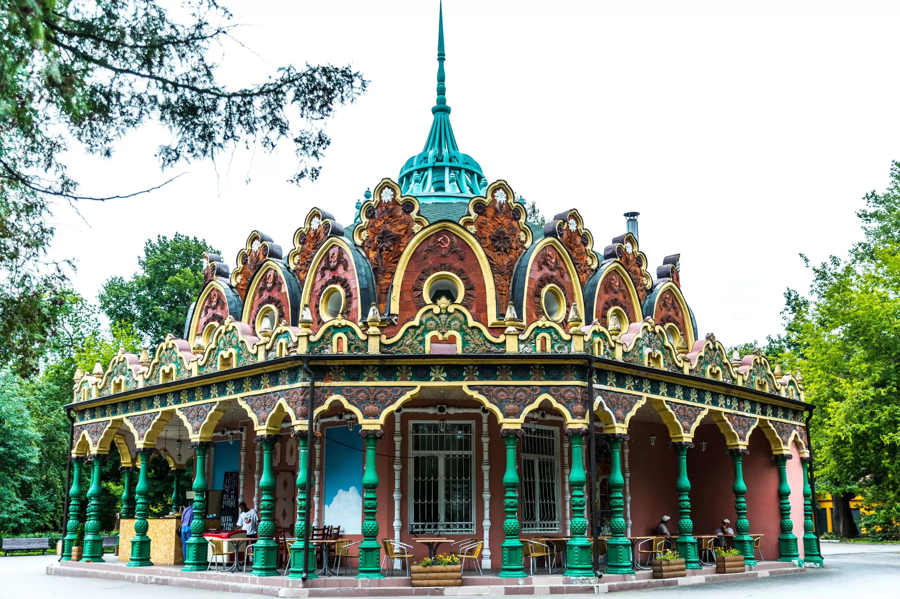
Павильон №35.Главтабак
Павильон был построен по проекту художника В. С. Кондратьева к открытию послевоенной Выставки 1954 года. В настоящее время закрыт на комплексную реставрацию, после окончания работ здесь планируется открыть кафе.
Фонтан "Мальчик с рыбой"
Небольшой бассейн-фонтан со скульптурой Бориса Николаевича Сона «Рыбак», или «Мальчик с рыбой».
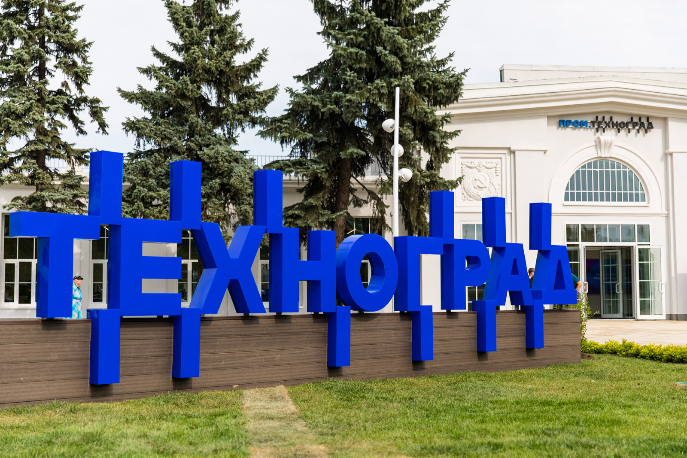
«Техноград»
Инновационно-образовательный комплекс «Техноград» — место, где можно освоить новую специальность, пройти профессиональную переподготовку, повысить свою квалификацию или получить базовые предпринимательские навыки.(Запись заранее)
Умный город
Хотите узнать про Москву больше — добро пожаловать в павильон «Умный город». Совершить виртуальную прогулку по павильону вам поможет 3D-тур.( Запись на экскурссию заранее).
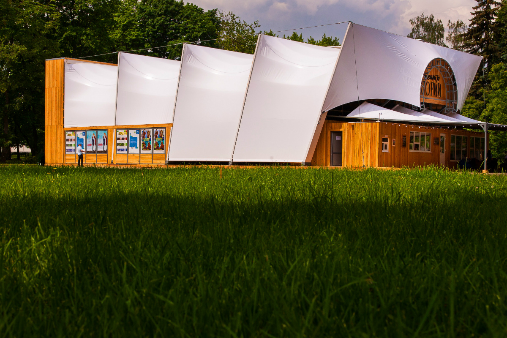
Летний кинотеатр-лекторий
Летние вечера в кинотеатре — это свежий воздух, хорошие фильмы и приятная компания.
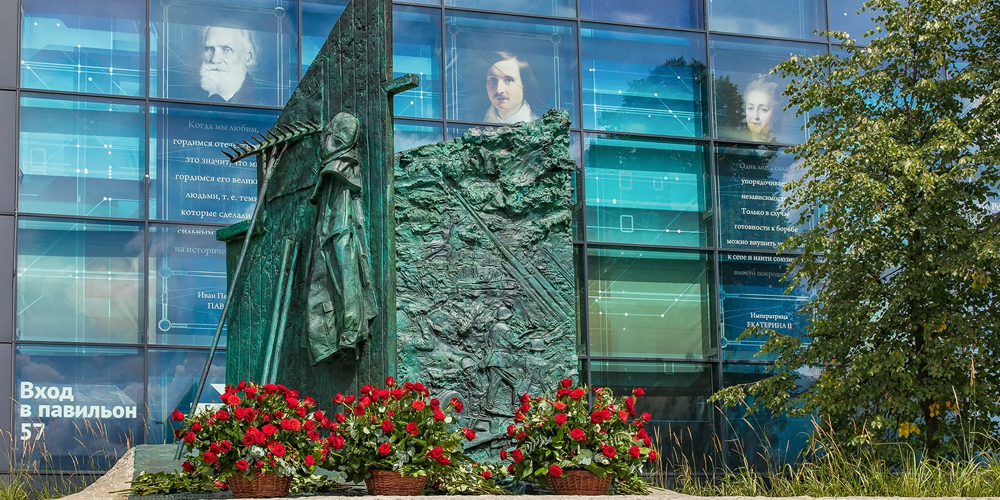
Памятный знак «Работникам ВСХВ"
На одной части бронзового изваяния мы видим традиционную верхнюю одежду времен Отечественной войны — фуражку и куртку — и ручной инструмент для работы. На другой — рельефное изображение солдат у зенитной пушки на фоне павильона «Рабочий и колхозница»
Истребитель Су-27
Легендарный советский и российский многоцелевой всепогодный сверхзвуковой тяжелый истребитель четвертого поколения Су-27, предназначенный для завоевания превосходства в воздухе
Павильон №55
В павильоне №55 на ВДНХ находятся семейные развлекательные музеи Big Creative — компании, создающей самые неординарные развлечения по всему миру.
Дом ремёсел
Мастерские располагают всем необходимым оборудованием для работы и инфраструктурой для общения и обучения.
Павильон №33
Павильон строился для проведения машиностроительных выставок, которые регулярно проходили на ВДНХ СССР. В павильоне демонстрировались новейшие достижения советского автопрома и его отраслевая продукция.
Гараж Особого назначения
В музее представлены легендарные машины лидеров Российской империи, Советского Союза и Российской Федерации.
Если вы определились с выбором, перейдённым к построению маршрута. Выберите, что желаете посетить(отметьте галочкой), после нажмите на кнопку “Клик”. Приятной прогулки:)
Достопримечательности:
Если у вас есть идеи, предложение по улучшению сайта, или вы знаете инетерсные места на ВДНХ, которых нет на сайте, я буду очень признательна если вы напишите на почту: milovanova-aa@yandex.ru. Заранее спасибо!